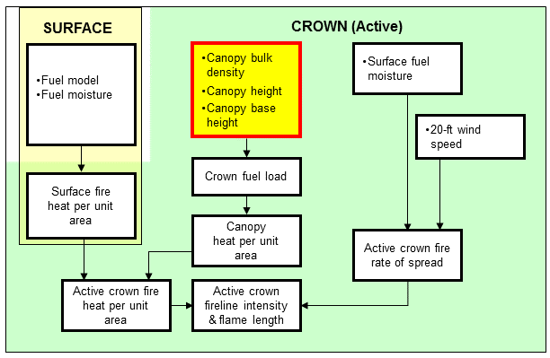
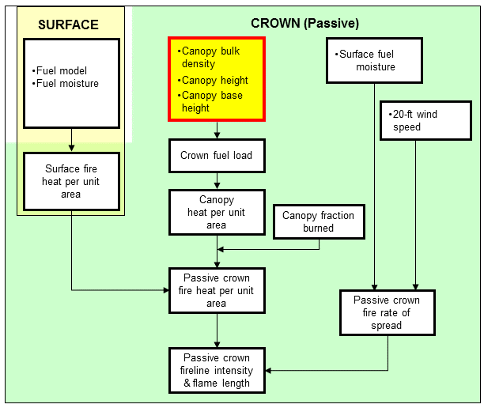

|
Canopy Base Height |
The canopy base height for an individual tree is the height at which there is sufficient fuel density to sustain canopy ignition. For a stand of trees, canopy base height considers both the main canopy layer and ladder fuels in the understory.
Canopy base height and foliar moisture content are used to calculate critical fireline intensity for transition to crown fire.
| I/O | Module | If | Notes |
| Input | CROWN | ||
| Output | None |
Stereo photographs, hemispherical photographs, and stand data are available with associated biomass and canopy fuel characteristics for five Interior West conifer stands, including:
Canopy bulk density, canopy base height, canopy biomass by component, available canopy fuel load, and vertical distribution of canopy fuel are presented for each plot at several stages of sampling, each corresponding to a level of simulated low thinning (100, 75, 50, and 25 percent of the initial basal area). Further information to help fuel managers estimate canopy fuel characteristics in similar forest conditions can be found in the paper:
Scott, Joe H.; Reinhardt, Elizabeth D. 2005. Stereo photo guide for estimating canopy fuel characteristics in conifer stands. Gen. Tech. Rep. RMRS-GTR-145. Fort Collins, CO: U.S. Department of Agriculture, Forest Service, Rocky Mountain Research Station. 49 p. plus stereoscope.

|
|  |
|  |